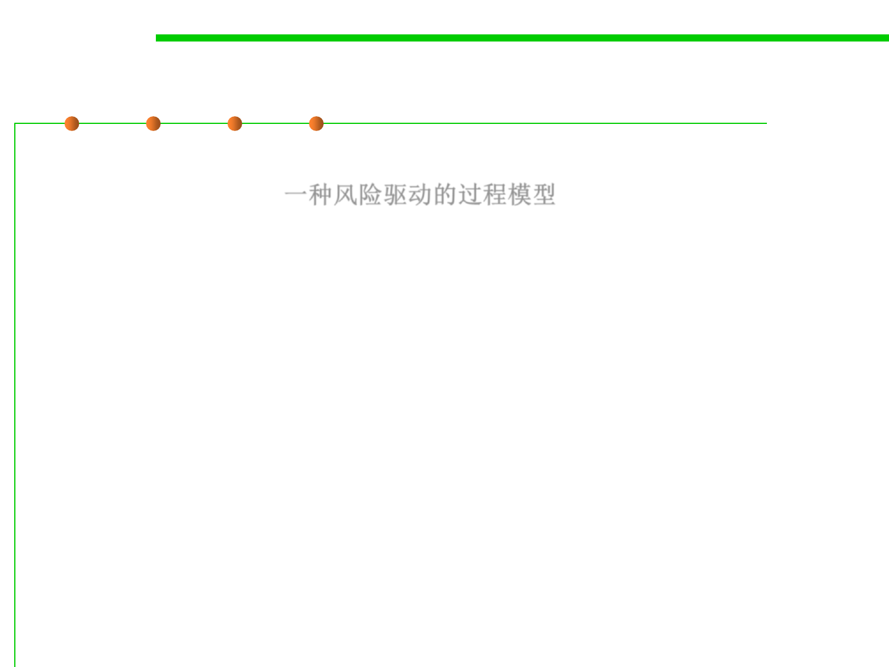

2.1 Software Lifecycle and Configuration Management
Spiral (iterative) 螺旋模型
▪ The spiral model is a risk-driven process model generator for
software projects. 一种风险驱动的过程模型
– Based on the unique risk patterns of a given project, the spiral model
guides a team to adopt elements of one or more process models, such as
incremental, waterfall, or evolutionary prototyping.
▪ Firstly described by Barry Boehm in 1986.